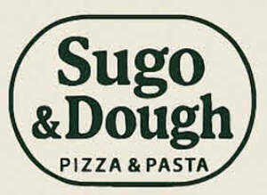

Trade Mark Journal No.2025/035 29 August 2025
UK00004247679 11 August 2025 (30)

Logo Description The logo consists of a stylized, dark green wordmark enclosed in an outlined capsule-shaped border. The words: “Sugo & Dough” appear prominently in a bold serif typeface, centered and capitalized, across two lines. The ampersand symbol (“&”) is slightly smaller and placed centrally between the words “Sugo” and “Dough.” Beneath this, in smaller all-caps sans-serif font, the descriptor “PIZZA & PASTA” is aligned centrally. The font combination and layout evoke a clean, classic, and authentic Italian bistro aesthetic. Color Scheme Primary Color: Deep green (used for text and outline) Background: Light cream or beige (suggesting warmth and simplicity) Font Identification "Sugo & Dough": Likely a bold transitional serif such as Reforma 1918, Georgia Bold, or Belizio “PIZZA & PASTA”: Likely a geometric sans-serif such as Futura, Avenir, or Montserrat Semi-Bold
- Class 30
- Pizzas; Sauces for pizzas; Pizza sauces; Uncooked pizzas; Sauces for use with pasta; Sauces for pasta; Pasta sauces; Fresh pizzas; Calzones; Pizza; Pasta; Pizza crusts; Pizza pies; Pasta dishes; Pre-baked pizzas crusts; Chilled pizzas; Dried and fresh pastas, noodles and dumplings; Pizza sauce; Frozen pizzas; Pizza spices; Pizza flour; Breadsticks; Pasta for incorporating into pizzas; Wholemeal pasta; Gluten-free pizza; Fresh pizza; Pizza mixes; Pasta products; Pasta salad; Fresh pasta; Frozen pizza crusts; Pasta sauce; Pizzas [prepared]; Pizza dough; Breads; Vegetable-based seasonings for pasta; Frozen pizza crusts made of cauliflower; Canned pasta foods; Pizza crust; Salad sauces; Dried pasta foods; Stuffed pasta; Truffle pasta; Pasta shells; Preserved pizzas; Lentil pasta; Chickpea pasta; Prepared pizza meals; Ravioli; Quinoa pasta; Frozen pizza; Rice pasta; Buckwheat pasta; Sauces; Pasta containing stuffings; Cereals for use in making pasta; Pizza bases; Flour-based gnocchi; Sandwiches; Savoury sauces; Dried pasta; Pizza dough mix; Savory sauces; Food dressings [sauces]; Lasagna; Sauces for chicken; Alimentary pasta; Sauces for rice; Savory sauces, chutneys and pastes; Savory sauces used as condiments; Prepared meals in the form of pizzas; Gnocchi; Pasta preserves; Spicy sauces; Tortellini; Lasagne; Pasta containing fillings; Spaghetti and meatballs; Spaghetti with meatballs; Prepared pasta; Pasta containing eggs; Thin breadsticks; Filled pasta; Thick breadsticks.
Mitchell Sorbie